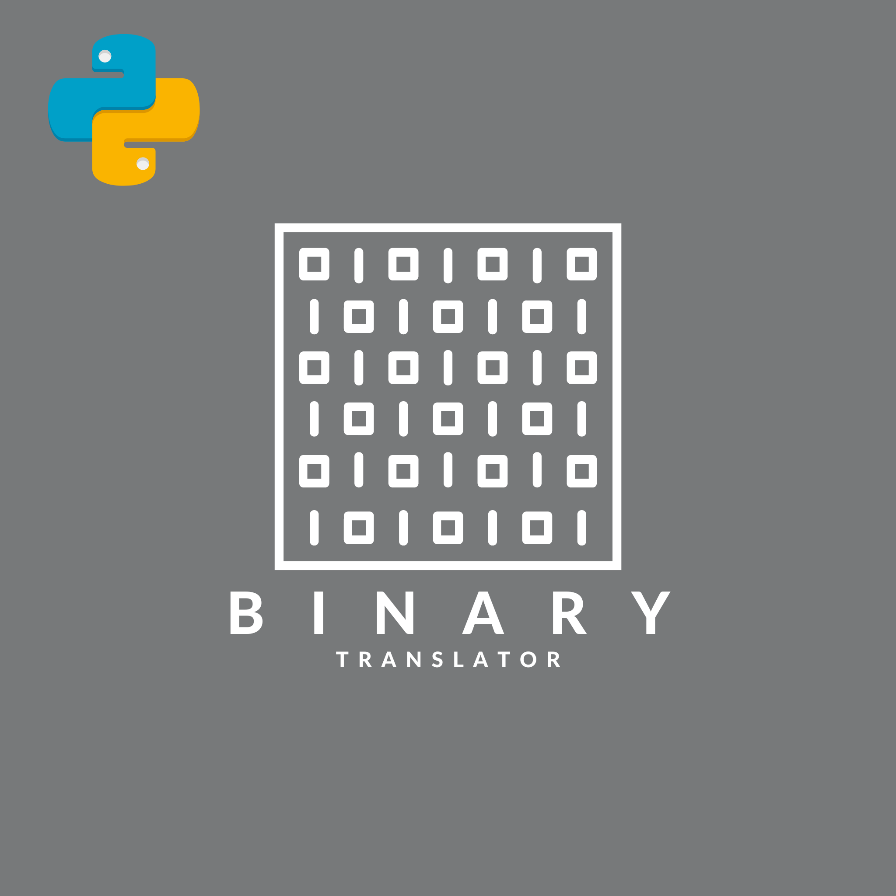

Personal Project
This is a project I worked on called "Binary Translator" which is a Python program that allows users to convert text to binary code and vice versa. The program takes user input in the form of either a string of text or a binary code, and then uses conditional statements and string manipulation to convert the input to its corresponding output. The binary code is represented using the ASCII code, where each letter is assigned a specific sequence of 0s and 1s.
I utilized basic programming concepts such as input/output, conditional statements, loops, and string manipulation to create the program. The code is well-documented and organized into functions to improve readability and maintainability. This project was a fun and educational challenge for me as I was able to practice my coding skills and learn more about binary code and ASCII representation. Overall, I'm happy with the final result and I hope others find it useful!
while, for, and if-else.